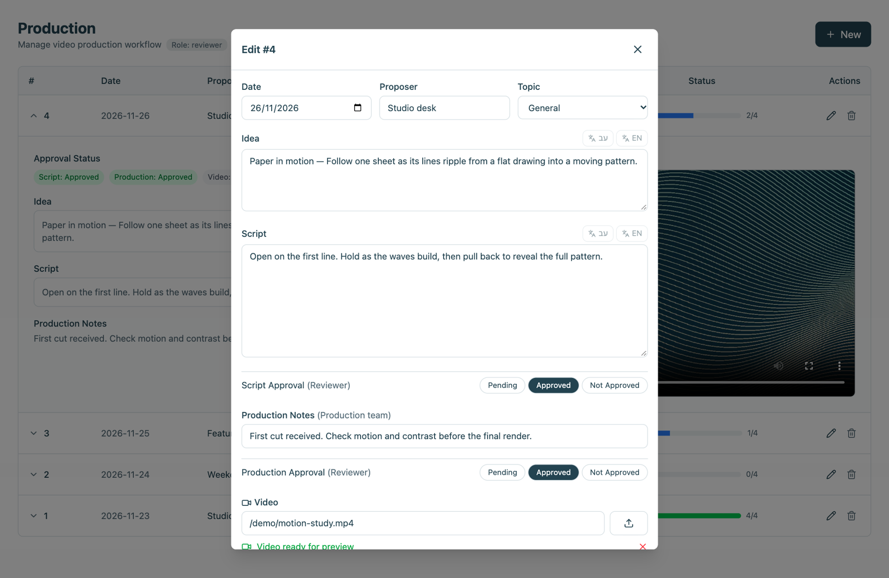

Production Desk
Track a video from pitch to final cut. Each production keeps its script, review notes, approvals and footage together.
Open a production record to review its script and approval decisions alongside the footage.



Track a video from pitch to final cut. Each production keeps its script, review notes, approvals and footage together.
Open a production record to review its script and approval decisions alongside the footage.
